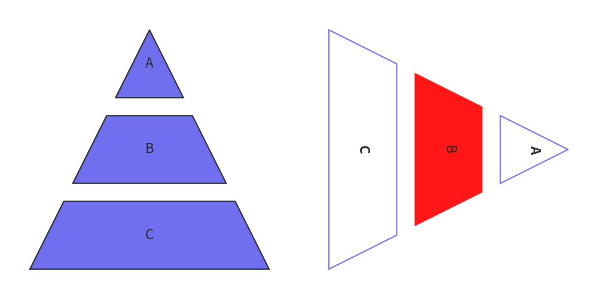

Pyramid
Class Pyramid draws smart art pyramid with custom style and orientation.
from drawlib.canvas import config, save
from drawlib.smartarts import Pyramid
from drawlib.text import text
config(width=100, height=50, grid=True)
p1 = Pyramid()
p1.add(text="A")
p1.add(text="B")
p1.add(text="C")
p1.draw((5, 5), width=40, height=40, margin=3)
p1 = Pyramid(default_style="solid", default_textangle=270)
p1.add(text="A")
p1.add(text="B", style="red_flat", textstyle="white")
p1.add(text="C")
p1.draw((55, 5), width=40, height=40, margin=3, align="left")
save()

image1.png
You can draw pyramid with these procedure.
- Initialize instance with specifying default style
- Add pyramid items with optional custom style
- Draw pyramid with specified position, size and alignment.
API Specification
Pyramid()
Initialize instance.
Args
- default_style (Union[str, Style, None], optional): The default style for the pyramid shapes. It can be a string that maps to a
Styleor aStyleinstance. Defaults to None. - default_textstyle (Union[str, Style, None], optional): The default text style for the pyramid shapes. It can be a string that maps to a
Styleor aStyleinstance. Defaults to None. - default_textangle (Optional[float], optional): The default rotation angle for the text within the pyramid shapes. Defaults to None.
- default_text_xy_shift (Optional[Tuple[float, float]], optional): The default x and y shift for the text within the pyramid shapes. Defaults to None.
add()
Add an item to the pyramid.
Args:
- text (str): The text associated with the item.
- style (Union[str, Style, None], optional): The style of the item. Can be a string key for a predefined style, a Style object, or None to use the default style.
- textstyle (Union[str, Style, None], optional): The text style of the item. Can be a string key for a predefined text style, a Style object, or None to use the default text style.
- textangle (Optional[float], optional): The angle of the text. Default is None, which is same to 0.
- text_xy_shift (Optional[Tuple[float, float]], optional): The XY shift of the text. Default is None, which is same to (0, 0).
draw()
Draw smart art pyramid.
Args:
- xy (Tuple[float, float]): The x and y coordinates of the bottom-left corner of the pyramid.
- width (float): The width of the pyramid.
- height (float): The heifht of the pyramid.
- margin (float): The margin between pyramid items.
- align (str): Alignment of a pyramid.
- order (str): Item order. "vertex -> base" or "base -> vertex". default is "vertex -> base".
draw_flexible()
Draw smart art pyramid with flexible pyramid item heights.
Args:
- xy (Tuple[float, float]): The x and y coordinates of the bottom-left corner of the pyramid.
- width (float): The width of the pyramid.
- item_heights (float): The height of the each pyramid items.
- margins (float): The margin between pyramid items.
- align (str): Alignment of a pyramid.
- order (str): Item order. "vertex -> base" or "base -> vertex". default is "vertex -> base".
© 2026 drawlib by Yuichi Ito. Released under the Apache 2.0 License.